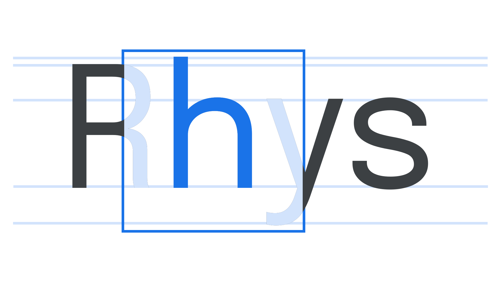
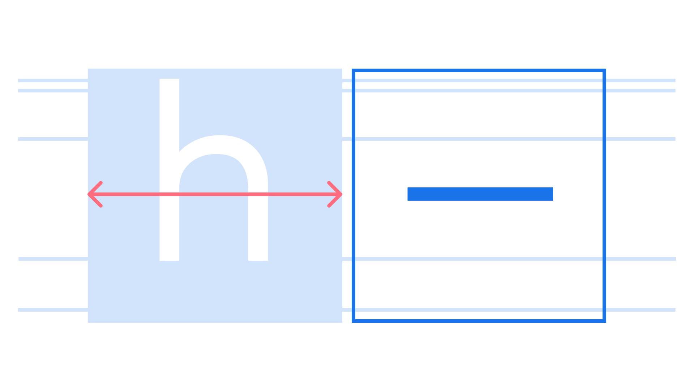

Em
By Google Fonts Knowledge contributors · Google Fonts Knowledge.
Original article · Source on GitHub · CC BY-SA 4.0. Text, illustrations and existing credits reproduced from the licensed Knowledge repository. Open Shelf adapted the layout and links; these adaptations are also CC BY-SA 4.0. No endorsement implied.
An em is a unit of measurement, relative to the size of the font; therefore, in a typeface set at a font-size of 16px, one em is 16px.
The em square is the “box” that each glyph is sized relative to. So, at 12 points, the em square is 12 points wide. The boundary of the box typically sits slightly above the cap-height and slightly below the descender.

The em dash is so named because its width, in theory, is one em—although in many fonts the em dash is somewhat narrower. An en dash takes up approximately half the space of an em square.

Historically, the em unit itself was named after the width of the capital “M;” however, in any digital font, the “M” may be wider or narrower than the em square of that font.